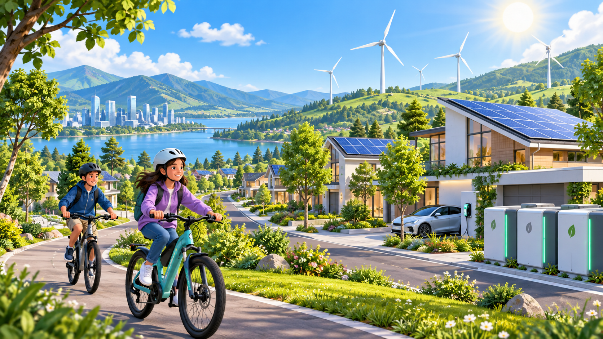
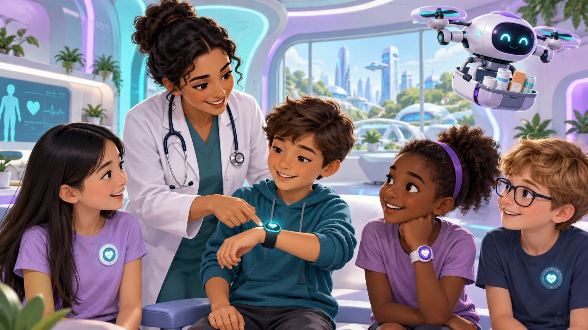
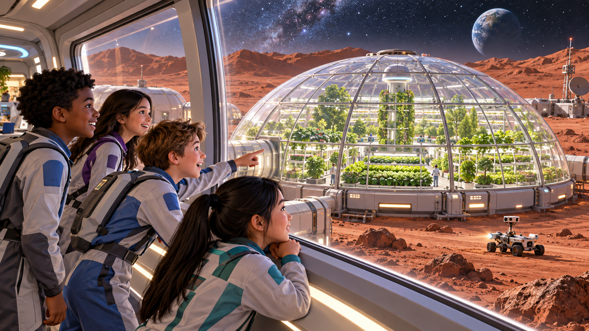

מושג מרכזי
מהו אתגר עתיד?
בעיה גדולה שכנראה תהיה חשובה גם בשנים הבאות — ויכולה להשפיע על הרבה אנשים.
אתגר טוב מתחיל מבעיה, לא מפתרון מוכן.

גלריית אתגרים · חלק א
תחומים גדולים
אקלים וחום
מים
אנרגיה תחבורה ובטיחות
תחבורה ובטיחותבכל תחום נשאל: מה הבעיה? למי זה חשוב?
גלריית אתגרים · חלק ב
עוד כיוונים אפשריים

בריאות עיר חכמה
עיר חכמה למידה בעתיד
למידה בעתיד
חללאפשר לסמן תחום גם אם עדיין לא יודעים מה הפתרון.
מחברים לחיים שלנו
אתגר גדול מתחיל מדוגמה קרובה
מים, תחבורה או אקלים הם מילים גדולות. פרויקט מתחיל כשהן פוגשות מקום אמיתי.
בית ספר · בית · שכונה · עיר · הדרך לכיתה
במפגש הבא
מנושא גדול לבעיה ברורה
נלמד להפוך “תחבורה”, “מים” או “למידה” לשאלה שאפשר לחקור ולפתור.
דוגמה: לא “תחבורה” — אלא “איך תלמידים מגיעים לבית הספר בבטחה?”